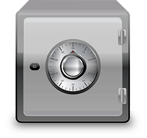
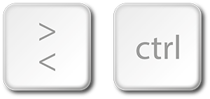

En bloggrubrik ligger här
Inlägget postades 15 februari, 2013
Vi är experter på versionshantering och bygger långsiktigt pålitliga lösningar där du får full kontroll över dina filer och deras historik. Med Repos behöver inte din data ligga lagrad på okända servrar för att du ska kunna bjuda in till samarbeten. Du äger datan.
Med Repos får du också automatiskt spårbarhet vilket ger dig en tidslinje över hur dina filer utvecklats över tid och vem som gjort vad. På så vis lämpar sig våra produkter utmärkt som grund för projekt med flera deltagare.
Vi bygger alla våra lösningar på open source-komponenter. Det innebär att vi kan garantera en konstant utveckling och du kommer aldrig att bli inlåst i ett föråldrat system. Vi bygger alla våra lösningar på open source-komponenter. Det innebär att vi kan garantera en konstant utveckling och du kommer aldrig att bli inlåst i ett föråldrat system. Vi bygger alla våra lösningar på open source-komponenter. Det innebär att vi kan garantera en konstant utveckling och du kommer aldrig att bli inlåst i ett föråldrat system.
Vi bygger alla våra lösningar på open source-komponenter. Det innebär att vi kan garantera en konstant utveckling och du kommer aldrig att bli inlåst i ett föråldrat system. Vi bygger alla våra lösningar på open source-komponenter. Det innebär att vi kan garantera en konstant utveckling och du kommer aldrig att bli inlåst i ett föråldrat system. Vi bygger alla våra lösningar på open source-komponenter. Det innebär att vi kan garantera en konstant utveckling och du kommer aldrig att bli inlåst i ett föråldrat system.
En bloggrubrik ligger här
Inlägget postades 15 februari, 2013
Vi är experter på versionshantering och bygger långsiktigt pålitliga lösningar där du får full kontroll över dina filer och deras historik. Med Repos behöver inte din data ligga lagrad på okända servrar för att du ska kunna bjuda in till samarbeten. Du äger datan. Vi bygger alla våra lösningar på open source-komponenter. Det innebär att vi kan garantera en konstant utveckling och du kommer aldrig att bli inlåst i ett föråldrat system.
Med Repos får du också automatiskt spårbarhet vilket ger dig en tidslinje över hur dina filer utvecklats över tid och vem som gjort vad. På så vis lämpar sig våra produkter utmärkt som grund för projekt med flera deltagare. Vi bygger alla våra lösningar på open source-komponenter. Det innebär att vi kan garantera en konstant utveckling och du kommer aldrig att bli inlåst i ett föråldrat system.
Vi bygger alla våra lösningar på open source-komponenter. Det innebär att vi kan garantera en konstant utveckling och du kommer aldrig att bli inlåst i ett föråldrat system.
Vi bygger alla våra lösningar på open source-komponenter. Det innebär att vi kan garantera en konstant utveckling och du kommer aldrig att bli inlåst i ett föråldrat system. Vi bygger alla våra lösningar på open source-komponenter. Det innebär att vi kan garantera en konstant utveckling och du kommer aldrig att bli inlåst i ett föråldrat system.